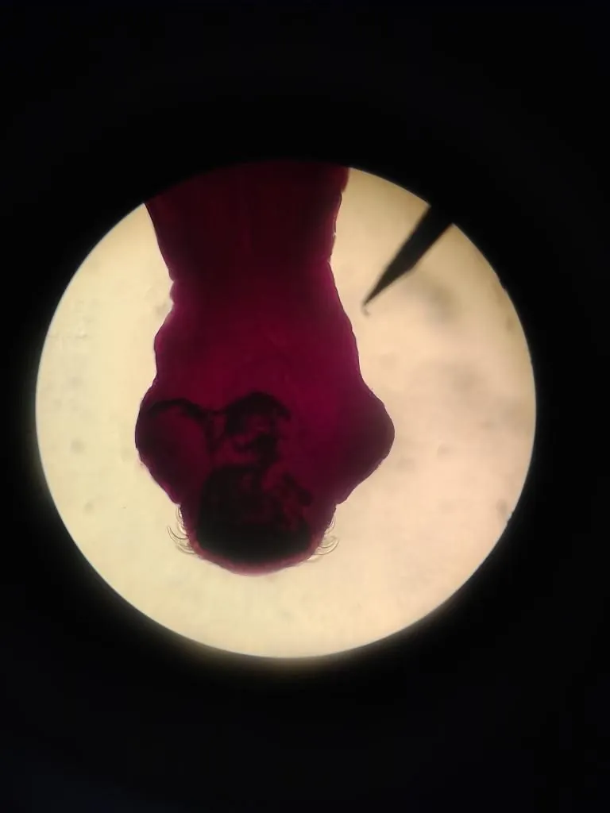

其他无脊椎动物 · 动物界
猪带绦虫 Taenia solium

寄生在人体小肠的大型绦虫，猪是中间宿主，人吃生猪肉或误食虫卵可感染，严重时可能引发脑囊虫病。
- 分类
- 门扁形动物门纲绦虫纲目圆叶目科带绦虫科属带绦虫属
- 栖息环境
- 成虫寄生在人体小肠，幼虫阶段寄生在猪的肌肉中
- 地理分布
- 全球分布，与生猪饲养和饮食卫生条件相关
- 保护级别
- 暂无评估；重要寄生虫，需重视食品安全
物种志
猪带绦虫成虫体长可达 2–4 m，身体由头节、颈节和许多节片组成，头节上有四个吸盘和一圈小钩，用于附着在人体小肠壁上；节片越往后越成熟，末端的孕节内含大量虫卵。它没有消化道，靠体表吸收宿主肠道内的营养。
它的生活史需要猪作为中间宿主：孕节或虫卵随人粪排出，被猪吞食后，虫卵在猪体内发育为囊尾蚴，寄生在猪肉中；人吃未煮熟的含囊尾蚴猪肉后感染，囊尾蚴在小肠内发育为成虫。更严重的是，人若误食虫卵，虫卵可在人体内发育为囊尾蚴，引起囊尾蚴病，寄生在脑部时称为脑囊虫病，可导致癫痫和神经症状。预防的关键是猪肉彻底煮熟、生熟厨具分开、加强生猪检疫和粪便管理，感染者应及时就医驱虫。
形态与习性
- 食性寄生在小肠内，靠体表吸收营养
- 体长成虫可达 2–4 m
- 中间宿主猪，囊尾蚴寄生在猪肉中
- 感染途径吃未煮熟的含囊尾蚴猪肉，或误食虫卵
- 危害可引起脑囊虫病，导致癫痫和神经症状
- 预防猪肉彻底煮熟、生熟厨具分开、加强检疫和粪便管理
趣味知识
- 猪带绦虫成虫可以长到 2 至 4 米，寄生在人的小肠里。
- 误食虫卵比吃生猪肉更危险，可能导致脑囊虫病。
- 猪肉必须彻底煮熟，生熟砧板和刀具要分开使用。